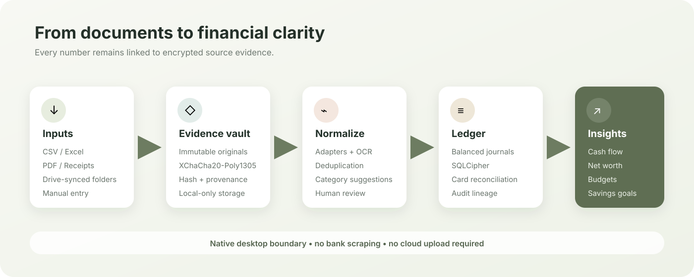

原本を一つの Inbox へ
対応 CSV・XLSX・text PDF・画像・EMLを同じ場所で確認。
ローカルファーストの家計簿デスクトップアプリ
HOUSEHOLD FINANCE, WITH A TRACEABLE SOURCE
銀行、カード、PayPay、レシート、PDF、証券口座。ばらばらの記録をあなたのパソコンでつなぎ、二重計上を防ぎながら、数字の根拠までたどれる家計簿にします。
現在の公開バイナリはアドホック署名済み・未公証の macOS ARM64 版です。Windows バイナリは未公開です。

対応 CSV・XLSX・text PDF・画像・EMLを同じ場所で確認。
カード利用と後日の銀行引落を、費用と負債返済に分けます。
集計から取引、元の CSV 行・PDF・レシートまで掘り下げます。
ONE REVIEWABLE DATA FLOW
ファイルはそのまま取引になりません。KakeFlow は原本を保存し、抽出候補を照合し、人が確認した取引だけを台帳へ記帳します。
01 · SOURCES
02 · EXTRACT
03 · RECONCILE
05 · UNDERSTAND
CURRENT PRODUCT
集計だけで終わらず、取引、取り込み候補、元ファイルへ段階的に戻れることを重視しています。
INVESTMENTS, SEPARATE FROM SPENDING
証券残高は日常の支出に変換せず、別の portfolio snapshot として保存。取り込んだ銘柄・現金・為替レートを、評価額と損益の観点で家計の純資産へ統合します。
v1.0.0 リリースノートを読む →assetbalance(all)_*.csv から口座・銘柄・為替レートを保存。
SBI、楽天証券、Monex の対応する売買を元行付きで取り込み。
市場価格、含み損益、実現損益、配当、手数料、税を通貨別に表示。
HONEST RELEASE BOUNDARY
KakeFlow は継続開発中です。公開済みの動作と、まだ production-ready と言えない範囲を分けて示します。
PRIVATE SOURCE · LOCAL-FIRST · REVIEWABLE